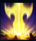

Garen
| Garen The Might Of Demacia | |
|---|---|
| Release date | 27.04.2010 |
| Class | Juggernaut |
| Positions | Top |
| Resource | N/A |
| Range type | Melee |
| Adaptive type | Physical |
| Base statistics | |||
| Health | 620 – 2048 | Mana | 285 – 965 |
| Health regen. | 8 – 16.5 |
Mana regen. | N/A |
| Armor | 36 – 87 | Attack damage | 66 – 142.5 |
| Magic resist. | 32 – 44.75 | Crit. damage | 175% |
| Move. speed | 340 | Attack range | 175 |
Garen este un luptător mândru și nobil, ce face parte din Avangarda Neînfricată. Camarazii săi îl admiră, iar inamicii îl respectă – poate și din cauză că face parte din prestigioasa familie Crownguard, casa însărcinată cu apărarea Demaciei și a idealurilor sale. Protejat de o armură rezistentă la magie și înarmat cu un paloș impunător, Garen e pregătit să înfrunte toți magii și vrăjitorii de pe câmpul de luptă, ca o adevărată tornadă de oțel a justiției. | PERSEVERENȚĂ Dacă Garen nu a suferit recent daune și nu a fost lovit recent de abilitățile inamicilor, își regenerează o parte din viața totală în fiecare secundă |
|||
|---|---|---|---|---|
LOVITURĂ DECISIVĂ Garen primește un bonus scurt la viteza de mișcare și scapă de toate efectele de încetinire care îl afectează. Următorul atac lovește o zonă vitală a inamicului, provoacă daune bonus și amuțește ținta. |
||||
CURAJ Garen își îmbunătățește în mod pasiv armura și rezistența la magie atunci când ucide adversari. În plus, poate activa această abilitate pentru a primi un bonus la tenacitate și un scut; după aceea, pe o perioadă mai lungă, daunele sunt reduse mai puțin. |
||||
| JUDECATĂ Garen își rotește rapid sabia în jurul corpului, provocându-le daune inamicilor din apropiere. |
||||
 |
DREPTATE DEMACIANĂ Garen invocă măreția Demaciei pentru a încerca să execute un campion inamic. |